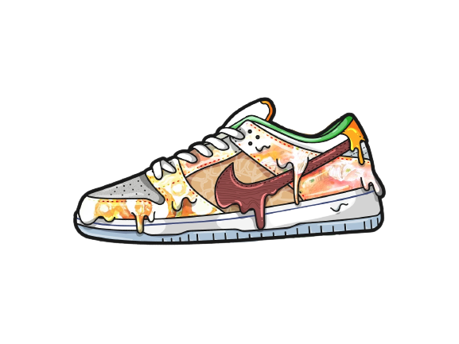
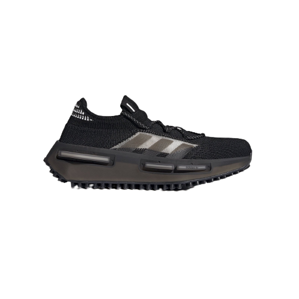
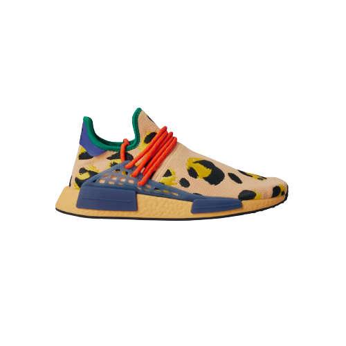
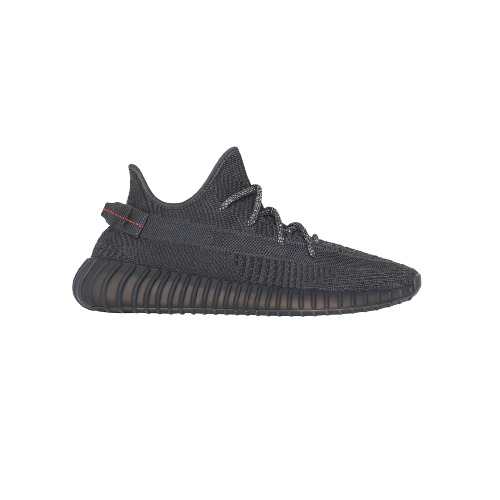
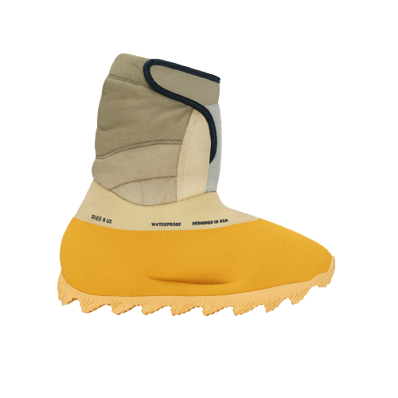
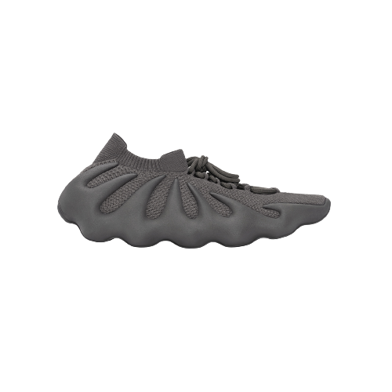
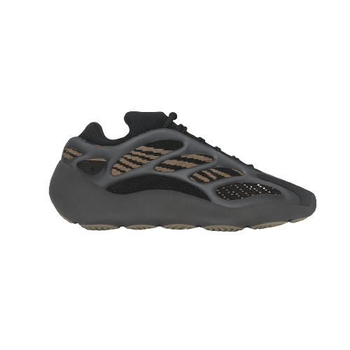
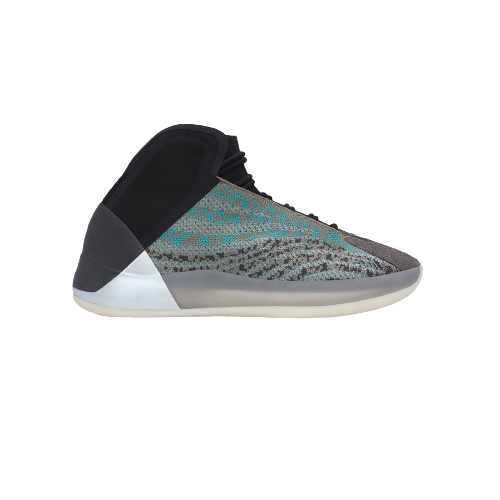
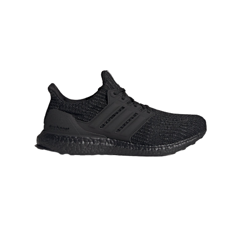
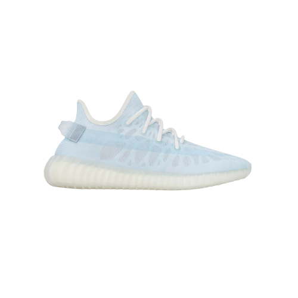

Produkter

NMD S1
2022-08-12
The adidas NMD_S1 ‘Triple Black’ delivers a neutral colorway of the lifestyle runner, featuring a moniker that’s short for ‘Sneaker Number 1.’ Reflective rope laces secure the black engineered Primeknit upper, featuring monomesh quarter panels and welded Three-Stripes. The lightweight build is mounted on a full-length Boost midsole, wrapped in a semi-translucent TPU cage with molded pieces embedded in the sidewall. Underfoot, the rubber outsole utilizes a 3D Trefoil traction pattern inspired by the Marathon TR.
Gold

Adidas NMD Hu Pharrell
2022-11-17
The Pharrell x adidas NMD Human Race ‘Pulse Amber’ dresses the minimalist silhouette in a colorful design inspired by the natural world. An oversized cheetah print decorates a light coral Primeknit upper with a low-cut collar trimmed in green binding. Red rope laces wrap over the midfoot and feed through a blue-tinged midfoot cage in semi-translucent TPU. Exterior branding is limited to the heel tab, featuring an adidas Trefoil on the right shoe and Pharrell’s equal-sign logo on the left. Responsive cushioning arrives via an orange-hued Boost midsole with TPU plugs that maintain the classic NMD aesthetic.
Rare

Adidas Yeezy Boost 350 V2
2022-11-17
The Yeezy Boost 350 V2 was first spotted at Kanye West's Yeezy Season 3 and released in September 2016. This 'Black Reflective' colorway touched down in June 2019 and casts the shoe's flexible Primeknit upper in what appears to be a solely black hue. When hit with direct light, the shoe's laces and upper reveal powerful reflective elements that are sewn into the design. The responsive feel of full-length adidas Boost cushioning remains atop a durable rubber sole.
Epic

Adidas Yeezy Knit RNR
2022-11-17
The adidas Yeezy Knit Runner Boot ‘Sulfur’ made its global debut at the Yeezy Season 8 runway show in Paris. Based on the low-top Yeezy Knit Runner, the futuristic silhouette features a calf-length canvas collar lined in a waterproof membrane and 150 grams of Thinsulate insulation for added warmth. Velcro closure allows for easy on and off. The minimalist upper is constructed from a single piece of knit textile, finished in a deep yellow hue and shored up with a reinforced PU toe. A matching yellow finish is executed on a textured EVA midsole, supported underfoot by a high-traction rubber outsole.
Gold

Adidas Yeezy 450
2022-11-17
The adidas Yeezy 450 ‘Resin’ showcases a pale green monochrome finish throughout the sneaker’s futuristic build, which comprises a one-piece knit upper and a claw-like EVA midsole, complete with tapered ‘fingers’ that wrap up the side panels. Details include tonal rope laces, a stretchy sock-like cuff, and an Ortholite insole marked with dual adidas and Yeezy branding. Underfoot, a contoured rubber outsole features a wavy traction pattern for optimal grip.
Epic

Adidas Yeezy 700 V3
2022-11-17
The adidas Yeezy 700 V3 ‘Arzareth’ features vibrant blue tones on a breathable knit upper, its side panels overlaid with a semi-translucent RPU cage for added structure and durability. Contrasting black is applied to the sneaker’s bootie-style collar, good for a snug fit around the ankle. The sneaker rides on a PU encapsulated EVA midsole, reinforced underfoot by a herringbone rubber outsole for grippy traction.
Rare

Adidas Yeezy QNTM
2022-11-17
The adidas Yeezy Quantum ‘Hi-Res Coral’ enlivens the basketball-inspired lifestyle silhouette with an energetic color palette. The shoe’s unique design is distinguished by the flowing lines of the yellow RPU cage, overlaid atop an upper built with semi-translucent jacquard mesh. Beige synthetic suede reinforces the toe, while the collar and heel feature stretchy neoprene construction in a subtle sage green hue. The sneaker rides on a full-length Boost midsole, enveloped in an orange TPU cage and supported by a color-matched rubber outsole.
Rare

Adidas Ultra Boost 4.0 DNA
2022-11-17
The success of the UltraBOOST continues with the adidas Ultraboost 5.0 DNA. The lightweight runner is dressed in a signature Primeknit upper, made from Primeblue, a high-performance recycled material made in part with Parley Ocean Plastic. 50% of the upper is textile, 75% of the textile is Primeblue yarn. Inspired by the original running sneaker, the “DNA” is made for the street informed by runners from across the world.
Gold

Mono
2022-11-17
A classic since the '70s, adidas Stan Smith shoes never seem to lose their appeal. This pair honors the sleek, sporty look of the original court classic but rethinks the materials. The result is a modern, minimalist design, where every component from the supple leather upper to the durable rubber outsole is carefully considered. A soft leather lining adds extra comfort whether you're lacing them up for the very first time, or the 1,000th.
Epic